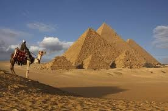
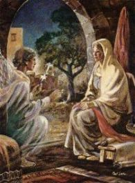
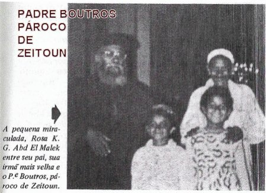
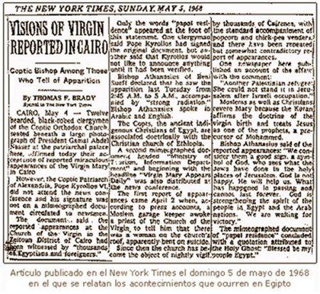
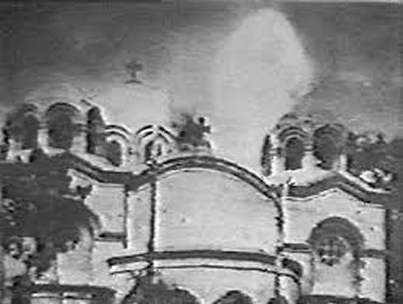
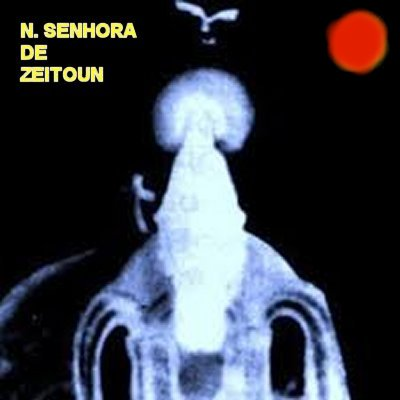
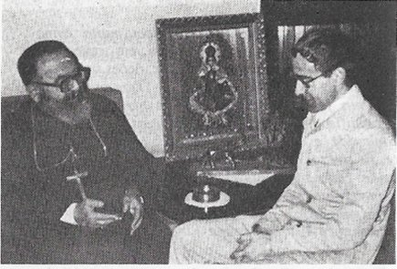

"IMAGENS"







COM O CARDEAL STEPHANOS

"CONVITE"
Este Site foi construído pelo Apostolado dos Sagrados Corações. Clique aqui ou no endereço abaixo para visitar o nosso PORTAL. Nele encontrará uma apreciável quantidade de Sites sobre o CRIADOR, o ESPÍRITO SANTO, JESUS DE NAZARÉ, sobre NOSSA SENHORA, os SANTOS ANJOS, e também, Sites que apresentam a Vida e Obra de diversos SANTOS. Todos eles elaborados com muito amor e dedicação, fundamentados na Sagrada Escritura, na Tradição Cristã, na Vida e Obra dos Santos e nas Manifestações Sobrenaturais, sobretudo, com a intenção de somente informar a Verdade.
http://www.apostoladosagradoscoracoes.com/

NOSSO E-MAIL
Desejando comunicar-se conosco, por favor utilize o E-mail abaixo:
apostoladosagradoscoracoes@hotmail.com

FIRMAS QUE DIVULGAM O SITE